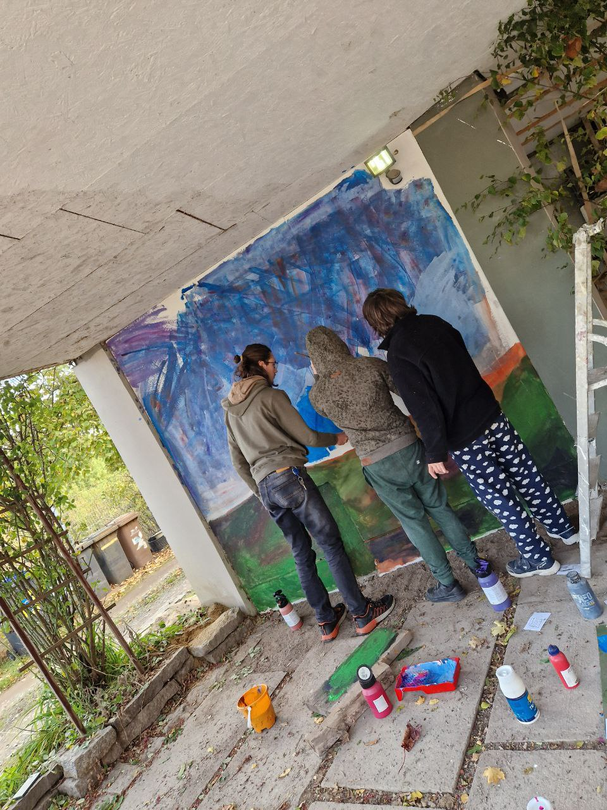
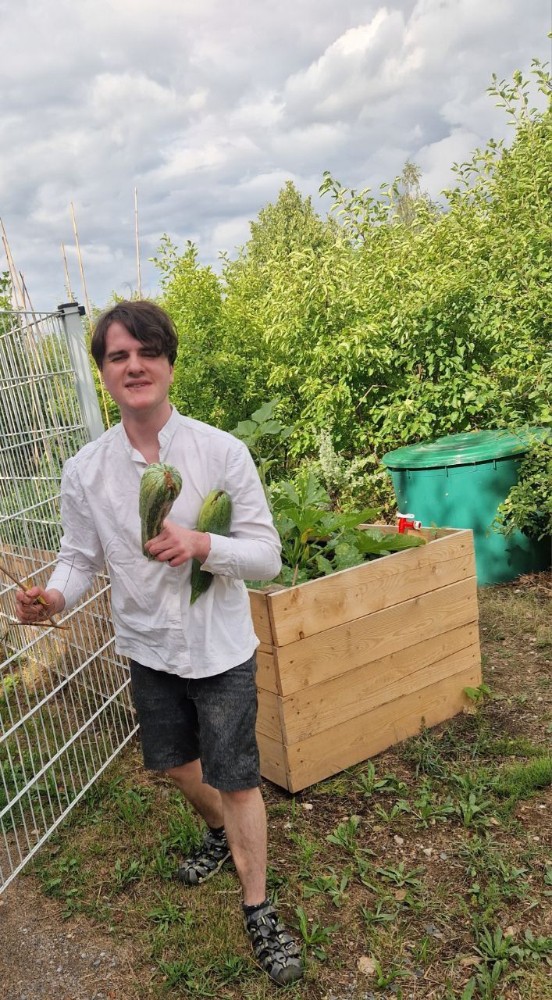
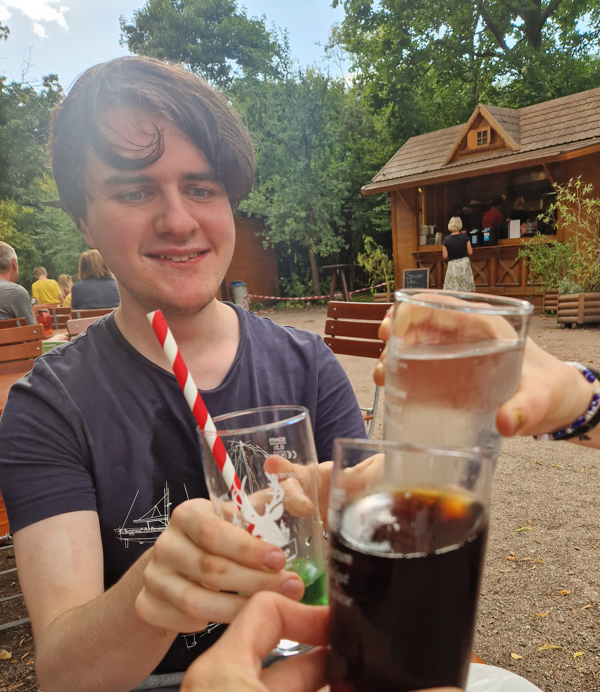

Selbstbestimmtes Wohnen und Leben
Nach wie vor ist es - aufgrund politischer Priorisierung und Gegebenheiten, aber nicht zuletzt altmodischer Denkmuster - noch immer schwer möglich Menschen mit Beeinträchtigung verschiedenster Natur ein selbstbestimmtes Leben zu ermöglichen, dass ihnen das Gefühl gibt ein gleichwertiger Teil der Gesellschaft zu sein. Aber wie kann das gelingen? Hier kommt das Team ins Spiel. Wir begleiten die drei Bewohner täglich. Dabei ist unsere Hauptaufgabe den Bewohnern das zu ermöglichen, was sie gern möchten. Das zu erkennen und zu gewährleisten benötigt Erfahrung, aber auch ein gewisses Einfühlungsvermögen in Menschen, deren Denken und Fühlen nicht so funktioniert, wie man es zunächst erwartet.


Wenn das gelingt, steht der Selbstbestimmung im Wohnen und Leben nichts mehr im Weg. Das Gefühl zu haben, selbstwirksam das eigene Leben zu gestalten, ist ein essenzielles Bedürfnis Aller. Indem wir Entscheidungen und Handlungen nicht abnehmen, sondern angepasst an die Fähigkeiten der zu unterstützenden Personen, auf nachhaltige Art und Weise assistieren, können wir diesem Bedürfnis gerecht werden.
Die Reise
Unser Wunsch ist es, einen Ort zu schaffen, an dem unterschiedlichste Menschen zusammenkommen, egal ob als Bewohnende, Mitarbeiter, Interessierte, oder Menschen die Unterstützung suchen. Dafür organisieren wir regelmäßige Begegnungstage, wo Kennenlernen und Austausch, aber auch inklusive Kultur im Mittelpunkt stehen. Zusammenarbeit mit inklusiven Projekten ist uns wichtig und interessiert uns sehr! Wenn du interessiert bist uns Kennenzulernen, nutze unser Kontaktformular, oder kontaktiere uns telefonisch oder per Email.
